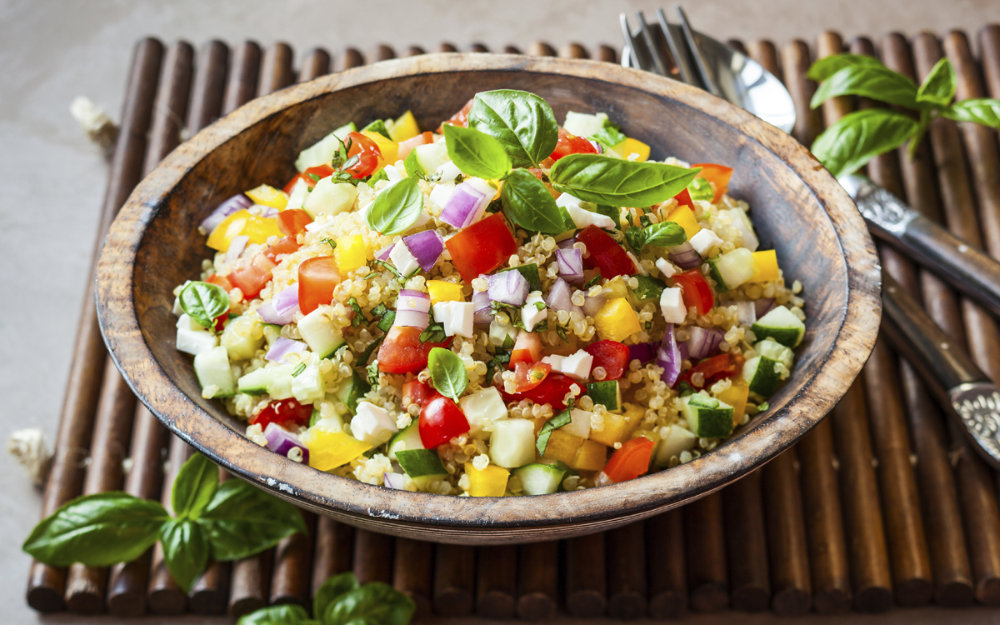

Ensalada de quinoa y vegetales
Ingredientes:
- 1 taza de quinoa cocida
- 1/2 taza de arándanos secos
- 1/2 taza de nueces picadas
- 1/2 taza de zanahoria rallada
- 1/2 taza de pepino en cubos
- 1/4 taza de cebolla roja picada
- 1/4 taza de hojas de cilantro picadas
- 2 cucharadas de aceite de oliva
- 1 cucharada de jugo de limón
- Sal y pimienta al gusto
- En un tazón grande, mezcla la quinoa cocida con los arándanos secos, las nueces picadas, la zanahoria rallada, el pepino en cubos, la cebolla roja picada y las hojas de cilantro picadas.
- En un tazón pequeño, mezcla el aceite de oliva, el jugo de limón, la sal y la pimienta para hacer el aderezo.
- Vierte el aderezo sobre la mezcla de quinoa y vegetales y mezcla bien para que todos los ingredientes estén cubiertos con el aderezo.
- Sirve la ensalada en platos individuales y disfruta de este plato vegano, saludable y delicioso.
¡Y listo! Esta ensalada es una opción rápida y sencilla para una comida vegana que te mantendrá lleno y satisfecho.
Puedes agregar otros vegetales y nueces según tu preferencia, pero asegúrate de mantener los arándanos secos para darle un toque dulce y contrastar con los sabores salados.